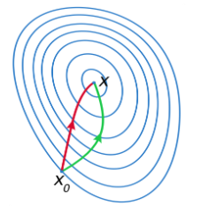

<!DOCTYPE html>
<!--[if IE 8]><html class="no-js lt-ie9" lang="en" > <![endif]-->
<!--[if gt IE 8]><!--> <html class="no-js" lang="en" > <!--<![endif]-->
<head>
  <meta charset="utf-8">
  
  <meta name="viewport" content="width=device-width, initial-scale=1.0">
  
  <title>L-BFGS &mdash; Machine-Manual-ja 17.06.Beta ドキュメント</title>
  

  
  
    <link rel="shortcut icon" href="../../../_static/showreel.ico"/>
  

  

  
  
    

  

  
  
    <link rel="stylesheet" href="../../../_static/css/theme.css" type="text/css" />
  

  

  
        <link rel="index" title="索引"
              href="../../../genindex.html"/>
        <link rel="search" title="検索" href="../../../search.html"/>
    <link rel="top" title="Machine-Manual-ja 17.06.Beta ドキュメント" href="../../../index.html"/>
        <link rel="up" title="math algorythm" href="../math.html"/>
        <link rel="next" title="SGD 確率的勾配降下法" href="../SGD/SGD.html"/>
        <link rel="prev" title="math algorythm" href="../math.html"/> 

  
  <script src="../../../_static/js/modernizr.min.js"></script>

</head>

<body class="wy-body-for-nav" role="document">

  <div class="wy-grid-for-nav">

    
    <nav data-toggle="wy-nav-shift" class="wy-nav-side">
      <div class="wy-side-scroll">
        <div class="wy-side-nav-search">
          

          
            <a href="../../../index.html" class="icon icon-home"> Machine-Manual-ja
          

          
          </a>

          
            
            
              <div class="version">
                17.06.Beta
              </div>
            
          

          
<div role="search">
  <form id="rtd-search-form" class="wy-form" action="../../../search.html" method="get">
    <input type="text" name="q" placeholder="Search docs" />
    <input type="hidden" name="check_keywords" value="yes" />
    <input type="hidden" name="area" value="default" />
  </form>
</div>

          
        </div>

        <div class="wy-menu wy-menu-vertical" data-spy="affix" role="navigation" aria-label="main navigation">
          
            
            
                <ul class="current">
<li class="toctree-l1"><a class="reference internal" href="../../../CG/CG.html">CG</a></li>
<li class="toctree-l1"><a class="reference internal" href="../../../algorithm/algorytm.html">algorytm</a></li>
<li class="toctree-l1"><a class="reference internal" href="../../../framework-compare/compare.html">framework 比較</a></li>
<li class="toctree-l1"><a class="reference internal" href="../../../framework-flow/framework.html">framework workflow</a></li>
<li class="toctree-l1"><a class="reference internal" href="../../../image/image.html">image</a></li>
<li class="toctree-l1 current"><a class="reference internal" href="../../kaggle.html">kaggle</a><ul class="current">
<li class="toctree-l2"><a class="reference internal" href="../../CrossValidation/CrossValidation.html">CrossValidation</a></li>
<li class="toctree-l2"><a class="reference internal" href="../../GBDT/GBDT.html">GBDT</a></li>
<li class="toctree-l2"><a class="reference internal" href="../../api/kaggle-api.html">kaggle-api</a></li>
<li class="toctree-l2"><a class="reference internal" href="../../classification/classification.html">classification competition</a></li>
<li class="toctree-l2"><a class="reference internal" href="../../feature-engineering/feature-engineering.html">feature engineering</a></li>
<li class="toctree-l2"><a class="reference internal" href="../../feature-select/featureselect.html">feature select 特徴選択</a></li>
<li class="toctree-l2"><a class="reference internal" href="../../image/image.html">image competition</a></li>
<li class="toctree-l2 current"><a class="reference internal" href="../math.html">math algorythm</a><ul class="current">
<li class="toctree-l3 current"><a class="current reference internal" href="#">L-BFGS</a><ul>
<li class="toctree-l4"><a class="reference internal" href="#id2">凸最適化問題</a></li>
<li class="toctree-l4"><a class="reference internal" href="#newton">Newton法</a></li>
<li class="toctree-l4"><a class="reference internal" href="#id3">Newton法の問題点</a></li>
<li class="toctree-l4"><a class="reference internal" href="#newton-l-bfgs">準Newton法(L-BFGS)</a></li>
<li class="toctree-l4"><a class="reference internal" href="#id4">セカント条件</a></li>
<li class="toctree-l4"><a class="reference internal" href="#d-bngn">d=−Bngn</a></li>
<li class="toctree-l4"><a class="reference internal" href="#gn-1gnxn-1xnhn">gn+1−gnxn+1−xn≈Hn</a></li>
<li class="toctree-l4"><a class="reference internal" href="#link-jupyter">Link(参考リンク・jupyterリンク等)</a></li>
</ul>
</li>
<li class="toctree-l3"><a class="reference internal" href="../SGD/SGD.html">SGD 確率的勾配降下法</a></li>
<li class="toctree-l3"><a class="reference internal" href="../gini/gini_coefficient_intuitive.html">SGD gini_coefficient_intuitive</a></li>
<li class="toctree-l3"><a class="reference internal" href="../log/log.html">対数変換</a></li>
<li class="toctree-l3"><a class="reference internal" href="../metricLearning/metricLearning.html">metricLearning</a></li>
</ul>
</li>
<li class="toctree-l2"><a class="reference internal" href="../../metric/metric.html">metric 評価基準</a></li>
<li class="toctree-l2"><a class="reference internal" href="../../nlp/nlp.html">natural language processing competition</a></li>
<li class="toctree-l2"><a class="reference internal" href="../../regression/regression.html">regression コンペ</a></li>
<li class="toctree-l2"><a class="reference internal" href="../../reinforcement/reinforcement.html">強化学習系コンペ</a></li>
<li class="toctree-l2"><a class="reference internal" href="../../sound/sound.html">sound competition</a></li>
<li class="toctree-l2"><a class="reference internal" href="../../time/time.html">時系列系コンペ</a></li>
<li class="toctree-l2"><a class="reference internal" href="../../kaggle.html#kaggle-past-solution">Kaggle Past Solution</a></li>
</ul>
</li>
<li class="toctree-l1"><a class="reference internal" href="../../../mindmap/mindmap.html">mindmap png</a></li>
<li class="toctree-l1"><a class="reference internal" href="../../../ml-scratch/ml-sctatch.html">ml scratch スクラッチでの実装</a></li>
<li class="toctree-l1"><a class="reference internal" href="../../../nlp/nlp.html">nlp 自然言語処理</a></li>
<li class="toctree-l1"><a class="reference internal" href="../../../python/index.html">Python</a></li>
<li class="toctree-l1"><a class="reference internal" href="../../../scientist_statistics/scientist.html">Data Scientist 統計学</a></li>
<li class="toctree-l1"><a class="reference internal" href="../../../web/web.html">web application framework etc</a></li>
</ul>

            
          
        </div>
      </div>
    </nav>

    <section data-toggle="wy-nav-shift" class="wy-nav-content-wrap">

      
      <nav class="wy-nav-top" role="navigation" aria-label="top navigation">
        <i data-toggle="wy-nav-top" class="fa fa-bars"></i>
        <a href="../../../index.html">Machine-Manual-ja</a>
      </nav>


      
      <div class="wy-nav-content">
        <div class="rst-content">
          

 


<div role="navigation" aria-label="breadcrumbs navigation">
  <ul class="wy-breadcrumbs">
    <li><a href="../../../index.html">Docs</a> &raquo;</li>
      
        <li><a href="../../kaggle.html">kaggle</a> &raquo;</li>
      
        <li><a href="../math.html">math algorythm</a> &raquo;</li>
      
    <li>L-BFGS</li>
    <li class="wy-breadcrumbs-aside">
      
          <a href="https://github.com/kaggle/math/L-BFGS/L-BFGS.rst" class="fa fa-github"> Edit on GitHub</a>
      
    </li>
  </ul>
  <hr/>
</div>
          <div role="main" class="document" itemscope="itemscope" itemtype="http://schema.org/Article">
           <div itemprop="articleBody">
            
  <div class="section" id="l-bfgs">
<h1>L-BFGS<a class="headerlink" href="#l-bfgs" title="このヘッドラインへのパーマリンク">¶</a></h1>
<div class="sidebar">
<p class="sidebar-title">目次</p>
<div class="contents local topic" id="id1">
<ul class="simple">
<li><p><a class="reference internal" href="#id2" id="id6">凸最適化問題</a></p></li>
<li><p><a class="reference internal" href="#newton" id="id7">Newton法</a></p></li>
<li><p><a class="reference internal" href="#id3" id="id8">Newton法の問題点</a></p></li>
<li><p><a class="reference internal" href="#newton-l-bfgs" id="id9">準Newton法(L-BFGS)</a></p></li>
<li><p><a class="reference internal" href="#id4" id="id10">セカント条件</a></p></li>
<li><p><a class="reference internal" href="#d-bngn" id="id11">d=−Bngn</a></p></li>
<li><p><a class="reference internal" href="#gn-1gnxn-1xnhn" id="id12">gn+1−gnxn+1−xn≈Hn</a></p></li>
<li><p><a class="reference internal" href="#link-jupyter" id="id13">Link(参考リンク・jupyterリンク等)</a></p>
<ul>
<li><p><a class="reference internal" href="#id5" id="id14">3分でわかるL-BFGS</a></p></li>
</ul>
</li>
</ul>
</div>
</div>
<div class="figure align-center">

</div>
<div class="section" id="id2">
<h2><a class="toc-backref" href="#id6">凸最適化問題</a><a class="headerlink" href="#id2" title="このヘッドラインへのパーマリンク">¶</a></h2>
<p>L-BFGSは凸最適化問題を効率よく解くことができ、scikit-learnやsparkの
線形モデル(logistic回帰など)のパラメータ推定など、広く用いられている。
この記事では、L-BFGSがどのような手続きによって最適解を得ているのか簡単にまとめる。</p>
</div>
<div class="section" id="newton">
<h2><a class="toc-backref" href="#id7">Newton法</a><a class="headerlink" href="#newton" title="このヘッドラインへのパーマリンク">¶</a></h2>
<p>L-BFGSなどは準Newton法と呼ばれており、Newton法を元に作られている。
まずはNewton法について説明する。</p>
<p>wikipedia</p>
<p>最急降下法と何が違うのか？
上の図の赤い線はNewton法、緑の線は最急降下法のxの更新を表す。見てわかる通りNewton法のほうが初期値から最適解x∗まで短い距離で到達している。最急降下法では１次の勾配のみを考慮するのに対してNewton法では2次の勾配まで考慮しているため、最急降下法に比べて大域的最適解に効率よく到達することができる。</p>
<p>ニュートン法の仕組み
点xnの次の点をxn+1=xn+Δxとして最適な解を逐次的に求める。
xn+1は以下のように決める
勾配方向dを決定
f(x−αd)を最小にするαを決める
xn+αdをxn+1とする
最適化したい関数をf(x)とする。この関数を二次のTaylor展開で近似すると</p>
<p>f(x+Δx)≈f(x)+ΔxT∇f(x)+12ΔxT(∇2f(x))Δx
ここでgn=∇f(xn)は点xにおける勾配で、Hn=∇2f(xn)は点xにおけるヘッセ行列である。</p>
<p>上の展開式を書き直すと、</p>
<p>h(Δx)≈ΔxTgn+12ΔxTHnΔx
この式を最小化するΔxを求めたいので、両辺をΔxで微分すると</p>
<p>∂hn(Δx)∂Δx=gn+HnΔx
上の式が0になるときhn(Δx)は最小値をとるので、その時のΔxを求めると、</p>
<p>Δx=−H−1ngn
ここで求めたΔxを探索方向とする。</p>
<p>アルゴリズムをまとめると以下のようになる</p>
<p>アルゴリズム:Newton法</p>
<dl class="simple">
<dt>while no convergence</dt><dd><p>H−1n,gnを計算
d ←−H−1ngn %探索方向dを決定
α∗=arg minαf(xn−αd) % line searchでステップ幅を決定
xn+1←xn+α∗d</p>
</dd>
</dl>
</div>
<div class="section" id="id3">
<h2><a class="toc-backref" href="#id8">Newton法の問題点</a><a class="headerlink" href="#id3" title="このヘッドラインへのパーマリンク">¶</a></h2>
<p>上の方法ではH−1nを計算する必要があるが、xの次元が∼108になった時にその行列の要素数は∼1016になってしまい、値がメモリに載らなくなってしまう。</p>
</div>
<div class="section" id="newton-l-bfgs">
<h2><a class="toc-backref" href="#id9">準Newton法(L-BFGS)</a><a class="headerlink" href="#newton-l-bfgs" title="このヘッドラインへのパーマリンク">¶</a></h2>
<p>準Newton法とはNewton法におけるヘッセ行列を別の方法で置き換えた方法のこと。準Newton法は様々な種類があるが、ここではL-BFGSについて説明する。</p>
</div>
<div class="section" id="id4">
<h2><a class="toc-backref" href="#id10">セカント条件</a><a class="headerlink" href="#id4" title="このヘッドラインへのパーマリンク">¶</a></h2>
<p>ヘッセ行列の逆行列H−1nが、正定値対称行列Bnで近似できたとする。すると、</p>
</div>
<div class="section" id="d-bngn">
<h2><a class="toc-backref" href="#id11">d=−Bngn</a><a class="headerlink" href="#d-bngn" title="このヘッドラインへのパーマリンク">¶</a></h2>
<p>は降下方向を向いていることが保証される。 ここで、gnの1次のテイラー展開を考えると</p>
</div>
<div class="section" id="gn-1gnxn-1xnhn">
<h2><a class="toc-backref" href="#id12">gn+1−gnxn+1−xn≈Hn</a><a class="headerlink" href="#gn-1gnxn-1xnhn" title="このヘッドラインへのパーマリンク">¶</a></h2>
<p>なので、Bnも上の条件を満たすとすると、</p>
<p>Bn(xn−xn−1)=(gn−gn−1)Bnsn=yn
ここで、</p>
<p>yn=gn−gn−1sn=xn−xn−1
とする。</p>
<p>Bnをどのように更新するか？
Bnを更新するとき、以下の２つの条件に従うとする</p>
<p>BnはBn−1に対してあまり変化しない。
Bnsn=ynを満たす
つまり、</p>
<p>B=arg minB∥B−Bn−1∥2s.t. Bnsn=ynB:正定値対称行列
上の条件を満たすH−1n=Bの更新式はBFGS更新式と呼ばれており、以下の式で表すことができる</p>
<p>Bn+1=(I−ρnynsTn)Bn(I−ρnsnyTn)+ρnsnsTn
ただし</p>
<p>ρ=ynsTn−1</p>
</div>
<div class="section" id="link-jupyter">
<h2><a class="toc-backref" href="#id13">Link(参考リンク・jupyterリンク等)</a><a class="headerlink" href="#link-jupyter" title="このヘッドラインへのパーマリンク">¶</a></h2>
<div class="section" id="id5">
<h3><a class="toc-backref" href="#id14">3分でわかるL-BFGS</a><a class="headerlink" href="#id5" title="このヘッドラインへのパーマリンク">¶</a></h3>
<p><a class="reference external" href="http://kotarotanahashi.github.io/blog/2015/10/03/l-bfgsfalseshi-zu-mi/">http://kotarotanahashi.github.io/blog/2015/10/03/l-bfgsfalseshi-zu-mi/</a></p>
</div>
</div>
</div>


           </div>
          </div>
          <footer>
  
    <div class="rst-footer-buttons" role="navigation" aria-label="footer navigation">
      
        <a href="../SGD/SGD.html" class="btn btn-neutral float-right" title="SGD 確率的勾配降下法" accesskey="n">Next <span class="fa fa-arrow-circle-right"></span></a>
      
      
        <a href="../math.html" class="btn btn-neutral" title="math algorythm" accesskey="p"><span class="fa fa-arrow-circle-left"></span> Previous</a>
      
    </div>
  

  <hr/>

  <div role="contentinfo">
    <p>
        &copy; Copyright 2015-2019, Machine Learnning Manual.

    </p>
  </div>
  Built with <a href="http://sphinx-doc.org/">Sphinx</a> using a <a href="https://github.com/snide/sphinx_rtd_theme">theme</a> provided by <a href="https://readthedocs.org">Read the Docs</a>. 

</footer>

        </div>
      </div>

    </section>

  </div>
  


  

    <script type="text/javascript">
        var DOCUMENTATION_OPTIONS = {
            URL_ROOT:'../../../',
            VERSION:'17.06.Beta',
            COLLAPSE_INDEX:false,
            FILE_SUFFIX:'.html',
            HAS_SOURCE:  true
        };
    </script>
      <script type="text/javascript" src="../../../_static/jquery.js"></script>
      <script type="text/javascript" src="../../../_static/underscore.js"></script>
      <script type="text/javascript" src="../../../_static/doctools.js"></script>
      <script type="text/javascript" src="../../../_static/language_data.js"></script>
      <script type="text/javascript" src="../../../_static/translations.js"></script>

  

  
  
    <script type="text/javascript" src="../../../_static/js/theme.js"></script>
  

  
  
  <script type="text/javascript">
      jQuery(function () {
          SphinxRtdTheme.StickyNav.enable();
      });
  </script>
   

</body>
</html>